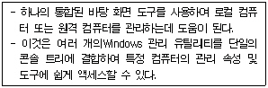
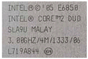

PC정비사-2급 (2007-10-21 기출문제)
1과목: PC유지보수
1. 하드디스크를 설치할 때 주의할 사항으로 올바른 것은?
- 하드디스크의 용량이 클 때는 구형 바이오스에서 용량을 지원하지 않는 경우도 있다.
- 하드디스크의 데이터 케이블 연결 커넥터는 방향이 바뀌어도 상관없다.
- P-ATA 하드디스크의 전원 케이블은 별도로 연결할 필요가 없다.
- P-ATA 하드디스크의 경우, 점퍼를 이용하여 마스터와 슬레이브 드라이브를 구분할 수 없다.
(정답률: 82%)

2. 메인보드에는 케이스에 장착되어 있는 여러 종류의 스위치와 램프의 커넥터들이 연결된다. 이 중에서 극성에 관계없이 커넥터를 거꾸로 연결해도 정상적으로 동작하는 것들은?
- 리셋스위치, 전원스위치
- 리셋스위치, 전원표시 LED
- 스피커, 전원표시 LED
- 스피커, 하드디스크 LED
(정답률: 70%)
3. "ECP, EPP, SPP, ECP+EPP"는 Award BIOS의 Chipset Features Setup에서 볼 수 있는 설정 값이다. 이 값을 사용하는 BIOS 설정 항목으로 올바른 것은?
- ECP DMA Select
- IDE Ultra DMA Mode
- Onboard PCI IDE Enable
- Parallel Port Mode
(정답률: 55%)
4. PnP(Plug & Play)에 대한 설명 중 잘못된 것은?
- Windows 98에서도 PnP가 지원된다.
- PnP 기능이 정상적으로 동작되기 위해서는 운영체제, 주변기기, 바이오스가 모두PnP를 지원할 수 있어야 한다.
- PnP가 지원되는 장치는 Windows 장치 관리자에 장치가 나타나지 않는다.
- Windows XP에서는 PnP와 NON-PnP 두 장치를 모두 지원한다.
(정답률: 80%)
5. 시스템 등록정보의 장치 관리자에 나타난 노란색 물음표의 의미는?
- 전원 공급 부족
- 자원 충돌
- 드라이버 미설치
- 하드웨어 고장
(정답률: 89%)
6. 하드디스크로 부팅하여 사용 중이던 컴퓨터가 갑자기 부팅이 되지 않을 경우의 조치로 잘못된 것은?
- 플로피디스크 드라이브의 동작 이상 여부 확인
- 바이러스 감염 여부 확인
- 시스템 파일의 손상 여부 확인
- CMOS의 설정 확인
(정답률: 80%)
7. Windows를 사용하던 중 “KERNEL32.DLL에서 잘못된 연산이 수행되었습니다.”라는 메시지가 나타나는 이유로 잘못된 것은?
- 어플리케이션간 메모리 충돌이 일어날 때
- KERNEL32.DLL의 버전이 다르거나 손상된 경우
- CPU와 메모리의 FSB가 맞지 않을 경우
- 메인 메모리가 불량인 경우
(정답률: 55%)
8. 3D를 지원하는 게임이 실행되지 않을 경우 해결책으로 잘못된 것은?
- CPU 및 메모리 용량이 게임이 요구하는 최소 사양에 미달하는 경우 해당 부품을 업그레이드 한다.
- BIOS 설정 항목의 'Init Display First'를 확인하여 PCI로 설정되어 있을 경우 AGP로 변경한다.
- DirectX가 게임에 맞는 올바른 버전으로 설치되어 있는지 확인한다.
- 그래픽 카드 드라이버가 제대로 설치되어 있는지 확인한다.
(정답률: 84%)
9. 부팅 시 잦은 오류가 발생하거나, 다운이 되는 컴퓨터가 있다. 이러한 원인으로 잘못된 것은?
- CPU 클럭 설정 이상
- SMPS(Switching Mode Power Supply)전력 부족
- 스피커 케이블 연결 불량
- 하드디스크 베드 섹터
(정답률: 78%)
10. 하드디스크를 80GB에서 160GB로 업그레이드 하였더니 인식하지 않는다. 137GB 이상의 하드디스크를 인식하게 하기 위한 방법으로 잘못된 것은?
- 운영체제가 지원 가능한지 확인한다.
- 시스템 메모리의 용량을 512MB이상으로 늘린다.
- 메인보드의 바이오스를 업그레이드하여 지원 가능하게 한다.
- Windows XP에서는 서비스팩을 설치한다.
(정답률: 55%)
11. 다음 부품 중에서 일반적으로 전자파가 가장 많이 방사되는 것은?
- 적외선 무선 마우스
- CPU
- 유선 키보드
- CRT 모니터
(정답률: 92%)
12. PC2-5300, PC2-6400 등의 빠른 전송 대역폭을 가지고 있어 듀얼 코어 CPU와 64비트 연산에 가장 적합한 메인메모리는?
- SDRAM
- DDR SDRAM
- DDR2 SDRAM
- RDRAM
(정답률: 79%)
13. BIOS에서 설정해 놓은 암호를 잊어버린 경우 적절한 고장수리 방법은?
- 하드디스크 데이터 버스 케이블을 마더보드에서 제거한 후 다시 연결한다.
- RAM을 마더보드에서 제거한 후 다시 장착한다.
- 컴퓨터 주변 장치를 모두 제거한 후 재부팅시킨다.
- CMOS 정보를 삭제하는 점퍼를 연결시켜 CMOS 정보를 초기화시킨다.
(정답률: 88%)
14. 컴퓨터를 부팅할 때마다 “BIOS Checksum Error”가 발생한다. BIOS Setup에서 설정을 변경하고 재부팅하면 이상이 없지만 전원을 끈 후에 다시 켜보면 같은 증상이 나타난다. 원인으로 타당한 것은?
- CMOS 배터리 방전이 원인이다.
- HDD의 부트섹터 오류가 원인이다.
- CPU의 무리한 오버클록이 원인이다.
- BIOS의 버전이 낮은 것이므로 업데이트하면 해결된다.
(정답률: 82%)
15. 컴퓨터 시스템의 드라이브 별 부팅 순서를 바꿀 때 가장 적절한 방법은?
- 장치관리자의 '플로피디스크 항목'에서 부팅 순서를 설정한다.
- 장치관리자의 '하드디스크 항목'에서 부팅 순서를 설정한다.
- FDISK를 사용하여 부팅 순서를 설정한다.
- BIOS에서 부팅 드라이브 순서를 설정한다.
(정답률: 83%)
2과목: PC운영체제
16. 운영체제(Operating System)의 개념과 목적으로 가장 잘못된 것은?
- 사용자에게 편의 제공
- Process의 생성 및 관리
- Process에 자원 분배
- Program 작성
(정답률: 76%)
17. Windows에서 TCP/IP로 구성된 네트워크상에 연결되어 있는 원격지 컴퓨터로의 네트워크 경로를 조회하는 명령어는?
- ping
- nbtstat
- tracert
- netstat
(정답률: 54%)
18. 인터넷 익스플로러의 인터넷 옵션에서 “시작 페이지로 사용할 페이지”를 설정할 때 사용되는 메뉴 탭의 이름은?
- 일반
- 보안
- 고급
- 내용
(정답률: 80%)
19. 분산처리시스템에 관한 설명으로 가장 적절한 것은?
- 처리할 자료가 일정량이 될 때까지 모아서 한꺼번에 처리한다.
- 중앙처리장치 사용 기간을 돌아가면서 할당 받는다.
- 작업을 정의된 시간 안에 반드시 처리해야 하는 시스템에 적합하다.
- 여러 개의 분산된 데이터 저장장소와 처리기들을, 네트워크로 연결하여 서로 통신을 하면서 동시에 일을 처리한다.
(정답률: 77%)
20. 레지스트리에 저장되는 값의 데이터 형식에 대한 설명 중 잘못된 것은?
- REG_BINARY : 0과 1로 표현되는 2진수 값을 가지는 데이터 형식이다.
- REG_SZ : 문자열 값을 가지는 데이터 형식이다.
- REG_DWORD : 16비트 워드 4개로 되어 있는 64비트 숫자 값이다.
- REG_MULTI_SZ : 다양한 유니코드 문자열의 묶음으로 다양한 내용을 데이터로 가질 때 사용한다.
(정답률: 57%)
21. Windows XP의 Windows 작업 관리자에 대한 설명 중 잘못된 것은?
- [응용프로그램] 탭에서 실행 중인 응용 프로그램을 확인할 수 있고, 프로그램의 응답이 없을 경우 강제 종료시킬 수 있다.
- [프로세스] 탭에서 실행 중인 프로세스를 CPU와 메모리 사용량 순으로 정렬하여 확인할 수 있다.
- [성능] 탭에서 컴퓨터의 CPU와 메모리의 사용량을 확인 할 수 있다.
- [네트워킹] 탭에서 사용 중인 네트워크 어댑터를 중지 또는 다시 시작하게 할 수 있다.
(정답률: 67%)
22. 새로 추가한 드라이버가 하드웨어와 맞지 않아 발생하는 문제들을 복구하기 위하여 마지막으로 성공한 구성을 선택하였다. 이때 Windows XP의 다른 레지스트리 키의 모든 변경 사항은 그대로 유지하지만 일부 레지스트리 키는 복원된다. 다음 중 복원되는 레지스트리 키는?
- HKEY_LOCAL_MACHINE?XFTWARE?Xcrosoft
- HKEY_LOCAL_MACHINE?Xstem?XrrentControlSet
- HKEY_LOCAL_MACHINE?XRDWARE?XPI
- HKEY_CURRENT_CONFIG?Xftware?Xcrosoft
(정답률: 66%)
23. Windows에서 컴퓨터의 시스템, 프로그램, 보안 이벤트 로그를 표시하고 관리하는 데 사용되는 관리도구는?
- 구성 요소 서비스
- 성능
- 이벤트 뷰어
- 장치 관리자
(정답률: 86%)
24. Windows XP의 시작프로그램 및 작업표시줄 트레이에 상주되는 프로그램들의 상주 여부를 설정하기 위해 사용되는 명령어는?
- Sysedit
- Winipcfg
- Msconfig
- Cmd
(정답률: 80%)
25. 시스템에 둘 이상의 운영체제가 설치되어 있는 경우 사용자가 선택하지 않을 때 시스템 부팅에 사용될 운영체제와 사용자의 입력을 대기할 시간 등을 설정할 수 있는 곳은?
- [제어판]-[시스템 등록 정보]-[고급]-[시작 및 복구]
- [제어판]-[시스템 등록 정보]-[고급]-[사용자 프로필]
- [제어판]-[시스템 등록 정보]-[하드웨어]-[장치관리자]
- [제어판]-[시스템 등록 정보]-[하드웨어]-[하드웨어 프로필]
(정답률: 48%)
26. Windows XP에서 기본적으로 지원하지 않는 파일 시스템은?
- EXT2
- FAT16
- NTFS
- CDFS
(정답률: 50%)
27. 다음은 Windows XP 제어판의 관리도구 중 무엇에 관한 설명인가?

- 서비스
- 이벤트 뷰어
- 컴퓨터 관리
- 성능
(정답률: 81%)
28. "장치 관리자"를 통해서 할 수 있는 작업이 아닌 것은?
- 장치의 이상 유무 판단
- 장치 드라이버 업데이트
- 장치의 리소스 확인
- 장치 드라이버의 드라이버 서명 확인 여부
(정답률: 82%)
29. 하드디스크의 포맷작업이 완료된 후 사용자가 실제 쓸 수 있는 용량은 하드디스크에 표기된 것보다 적다. 그 이유로 가장 올바른 것은?
- 하드디스크에 오류가 있어 쓸 수 있는 공간이 줄어든 것이다.
- 하드디스크 포맷에 필요한 기본 용량 때문이다.
- 일반적으로 하드디스크 전체 용량의 약5% 정도는 데이터를 저장할 수 없는 공간이다.
- 하드디스크 제조업체에서는 1KB를 1000Byte로 계산하지만 실제로는 1024Byte로 계산된다.
(정답률: 77%)
30. Windows XP 복구 콘솔 명령어에 대한 설명으로 잘못된 것은?
- DIR - 숨김파일과 시스템 파일을 포함하여 모든 파일의 목록을 표시한다.
- DEL - 디렉터리를 삭제하는 명령어이다.
- ATTRIB - 파일 속성(특성)을 보여 주거나 변경하는 데 사용한다.
- BOOTCFG - Boot.ini 파일에 있는 부팅 항목 설정을 구성,변경할 수 있는 명령어이다.
(정답률: 62%)
3과목: PC주변기기
31. 듀얼 채널을 구성하려고 할 때, 800MHz의 FSB로 동작하는 펜티엄4의 대역폭을 만족하는 메모리의 조합은?
- DDR 400 메모리 2개
- DDR 266 메모리 2개
- DDR 333 메모리 2개
- DDR 233 메모리 2개
(정답률: 66%)
32. 6개의 스피커로 구성된 스피커 시스템을 사용한다면, 다음 스피커 시스템에서 무엇을 선택해야 하는가?
- 4 채널 스피커
- 5.1 채널 사운드 스피커
- 7.1 채널 사운드 스피커
- 2.1 채널 사운드 스피커
(정답률: 67%)
33. HDD의 분당 회전수를 나타내는 단위는?
- RPM
- PPM
- BPS
- CPS
(정답률: 81%)
34. DVD-ROM에 대한 설명 중 잘못된 것은?
- 지름 12cm으로 기존의 오디오 CD나 CD-ROM과 크기가 같다.
- DVD-ROM 드라이브도 CD-ROM 드라이브와 같이 E-IDE 케이블 이용하여 연결할 수 있다.
- CD-ROM의 1배속은 150KB/s이고, DVD-ROM의 1배속은1500KB/s이다.
- DVD는 MPEG-2 파일과 압축 표준을 사용한다.
(정답률: 70%)
35. 종료(Termination) 설정이 필요 없는 장치는?
- 스카시 호스트 어댑터
- 동축 케이블을 이용한 네트워크 구성
- 스카시를 이용한 스캐너
- UTP 케이블을 이용한 네트워크 구성
(정답률: 59%)
36. 다음 중 다른 세 가지와 달리 수치가 클수록 성능이 낮아지는 것은?
- CPU 성능(MHz)
- RAM의Access속도(ns)
- CD-ROM성능(배속)
- LAN 연결속도 (bps)
(정답률: 77%)
37. 듀얼 코어(Dual Core)를 사용하는 CPU가 아닌 것은?
- 코어2듀오 콘로 E6320
- 애슬론 64 X2 4800+
- 애슬론 64 3500+
- 펜티엄 D 820
(정답률: 52%)
38. 그래픽카드에 대한 설명 중 잘못된 것은?
- 영상 신호를 생성하여 케이블을 통해서 모니터로 보내는 컴퓨터 전자부품이다.
- VGA가 발표되면서부터 모니터의 디스플레이 방식이 아날로그에서 디지털로 바뀌었다.
- 대부분의 그래픽카드는 비디오칩과 비디오 메모리, DAC를 가지고 있다.
- 메인 보드에 그래픽 카드를 장착할 수 있는 슬롯의 종류는 AGP, PCI-Express 등이 있다.
(정답률: 50%)
39. PC에서 사용 가능한 DVD 매체의 종류가 아닌 것은?
- DVD-R
- DVD-RW
- DVD-RAM
- DVD-RM
(정답률: 60%)
40. 컴퓨터에서 소리를 만드는 방식으로 일정한 주기를 이용하여 아날로그 파형의 값을 표본화하고 양자화와 부호화를 하여 디지털 값으로 변환하는 방식은?
- PCM 방식
- FM 방식
- MIDI 방식
- Wave Table 방식
(정답률: 50%)
41. 아래 내용은 CPU의 전면부에 적힌 내용이다. 이 CPU에 대한 설명 중 잘못된 것은?

- 시스템 버스는1333GHz 이다.
- 775 소켓을 사용한다.
- 4MB의 L2 캐시가 장착되어 있다.
- 동작 속도는 3.00GHz이다.
(정답률: 40%)
42. 디지털카메라 연결을 위한 인터페이스 방식으로 사용할 수 없는 것은?
- USB
- Serial Port
- IEEE-1394
- PCI
(정답률: 67%)
43. DRAM과 CPU 사이에서 데이터 병목 현상을 제거하기 위해 CPU에 장착한 메모리는?
- L2 캐시
- C2 캐시
- DMA
- CF-RAM
(정답률: 79%)
44. 키보드에 대한 설명으로 잘못된 것은?
- 메커니컬 방식은 물리적인 스프링이 있어 타자 충격을 흡수하여 충격누적으로 인한 손목관절의 엘보우(Elbow)를 예방하여 준다.
- 자판을 누르면 그에 해당하는 신호가 컨트롤러에 전송되는 방식은 메커니컬 방식과 멤브레인 방식이 동일하다.
- 메커니컬 방식은 멤브레인 방식에 비해 제작 공정이 단순하다.
- 메커니컬 방식과 멤브레인 방식의 차이점은 신호를 발생시키는 전극의 접촉 방식이다.
(정답률: 54%)
45. CRT 모니터의 화질을 결정하는 도트(슬롯) 피치에 대한 설명으로 잘못된 것은?
- 도트 피치가 클수록 화질이 선명하다.
- 전자총에서 발사된 전자 빔이 지나가는 구멍간의 가장 가까운 거리를 도트 피치라 한다.
- 화면에 표시되는 이미지가 얼마나 예리할 것인지를 나타낸다.
- 일반적으로 17인치 모니터는 0.24 ~ 0.28mm 정도의 도트 피치를 가진 제품이 주로 사용된다.
(정답률: 63%)
4과목: PC네트워크
46. 가정이나 소규모 기업에서 최소한의 비용으로 PC 2대를 네트워크로 직접 연결하여 사용하려고 할 때 반드시 필요한 것이 아닌 것은?
- HUB
- Cross Cable
- NIC(Network Interface Card)
- OS(네트워크 기능 포함)
(정답률: 63%)
47. OSI 모델의 네트워크 계층에서 동작하는 네트워크 연결 장치는?
- Bridge
- Router
- Switch
- Repeater
(정답률: 67%)
48. NETBEUI 프로토콜에 대한 설명 중 올바른 것은?
- TCP/IP 프로토콜 대신 Windows XP 이상의 운영체제에서만 사용된다.
- 주로 원격지 네트워크로의 이동 경로를 확인하는데 사용된다.
- 인터넷 연결이 아닌 소규모LAN에 많이 이용된다.
- Windows XP에서 인터넷 접속을 위하여 필수적인 프로토콜이다.
(정답률: 64%)
49. 고정IP를 사용하는 ADSL 서비스를 받는 고객이 Network를 설정할 때 반드시 필요한 값이 아닌 것은?
- IP Address
- DHCP Server Address
- Gateway Address
- Subnet Mask
(정답률: 77%)
50. 크래커에 대한 설명 중 올바른 것은?
- 프로그램을 개발하는 사람 모두를 말한다.
- 악의를 가지고 다른 사람의 컴퓨터에 데이터나 프로그램을 훔쳐보거나, 수정/파괴 등을 일삼는 사람을 뜻한다.
- 컴퓨터 또는 컴퓨터 프로그래밍에 뛰어난 기술자로서 네트워크의 보안을 지키는 사람을 말한다.
- 사전적 의미로 컴퓨터 미치광이라는 뜻이다.
(정답률: 86%)